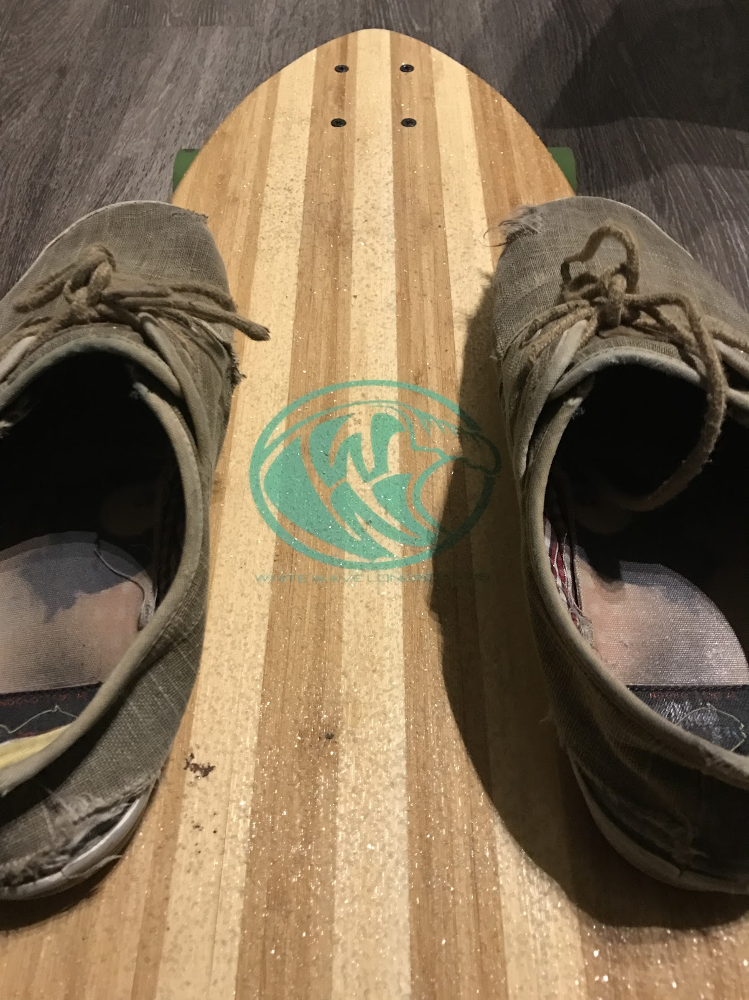

Me
|
|
|

I like shooting film photography and developing it myself when I have time. This is a favorite picture of mine. |

This is an example of a Spanish Revival, one of my favorite architectural styles. Architecture and real estate are another hobby of mine. I've had experience listing and marketing a house for rent as well. |

Wolfgang Amadeus by Phoenix |

The Brightside by Aer |

|
|